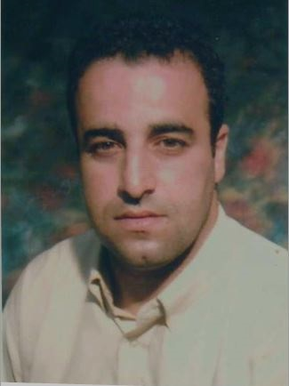

Lamri, Mansouri
Technicien Informatique et Resautage
Student
Configurable Computing Systems Lab
Department of informatique & Computer
Montreal Cegep Saint Laurent
Saint Laurent, Montreal, Canada
Education Experience/Experience d'education
- AEC Administration des réseaux informatiques, Cégep de Saint-Laurent, Montréal . Année d’obtention 2022.
- Baccalauréat de premier cycle reconnu, <>Selon l’équivalence des études effectuées hors Québec Année d’obtention 2017
- Diplôme ingénieur en génie Mécanique, Cégep de Saint-Laurent, Montréal . Année d’obtention 2022.
Work Experience/EXPÉRIENCE PROFESSIONNELLE
TELECON MONTREAL,
TECHNICIEN DOMOTIQUE ALARME ET INCENDIE POUR SOUSTRAITANT ADT, STANLEY ET BELL MAISON INTELLIGENTEBELLSOLUTIONSTECH INC, MONTREAL,
Technicien d’installation Telecom et de maintenance téléphonique et internetProgrammeur analyste
Programmeur analyste Suivi des problèmes techniques 2007
Objective
- Technicien informatique et reseau
- Gestion reseau departement IT
- System Electronique et gestion server
- Electrical System & Control
Publications
- None